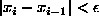
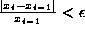
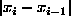
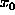
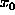
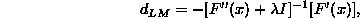
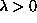
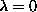
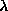

Issues to deal with.
Newton Raphson - making a quadratic approximation to the surface. If this approximation is bad N-R is likely to diverge.
Multi-modal objective function - local maxima.
Use multiple starting values.
When to stop (convergence criteria).
Absolute convergence:  .
Relative convergence:  .
Relative convergence will be unhelpful if the true solution is close to 0.
Further  maybe small, not because we are close to the solution, but because the algorithm is progressing slowly.
In statistical problems, we don't just have the root (parameter estimate) to find, we also have the objective function, the log-likelihood.
We can monitor this too, during the iterative procedure. Statistically, we have a metric to decide whether or not a change in the log-likelihood is of interest.
What does it tell you if the log-likelihood moves by 0.0001 during an iteration, but the parameter estimate jumps by 10?
Consider a 1 dimensional minimization problem:
We want to minimize F, but instead we minimize  ,
where t is now a scalar,  is a starting point and d is a direction.
,
where t is now a scalar,  is a starting point and d is a direction.
That is we have replaced the original problem, with a new one ``find the minimum of the function in a particular direction''.
Clearly, we want to look in ``good'' directions.
Newton-Raphson, is equivalent to direction  ,
but if we are not near the minima, then this will not necessarily
force us down the hill - it can diverge.
,
but if we are not near the minima, then this will not necessarily
force us down the hill - it can diverge.
The method of steepest descent, chooses the direction  at which
F is decreasing most rapidly at x, this gives
at which
F is decreasing most rapidly at x, this gives  .
.
The problem with this is that is that you might only descend for a short distance.
A compromise is the Levenberg-Marquardt adjustment:

 . Consider two cases,  , and  large.